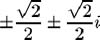
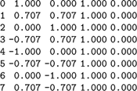
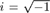
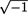
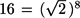
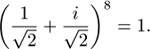
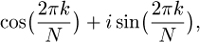
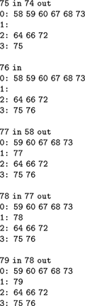

C++ Programming Robert Sedgewick - Princeton University Addison Wesley Professional Algorithms in C++, Parts 1–4: Fundamentals, Data Structure, Sorting, Searching, Third Edition C++ Programming Robert Sedgewick - Princeton University Addison Wesley Professional Algorithms in C++, Parts 1–4: Fundamentals, Data Structure, Sorting, Searching, Third Edition
4.8. First-Class ADTs
Our interfaces and implementations of stack and FIFO queue ADTs in Sections 4.2 through 4.7 achieve the important objective of hiding from the client the particular data structure used in the implementation. Such ADTs are widely useful, and will serve as the basis for many of the implementations that we consider in this book.
When we use such data types in our programs in the way that we use built-in data types such as int or float, however, we can encounter pitfalls. In this section, we consider how to construct ADTs that we can manipulate in the same way that we manipulate built-in types in client programs, while still achieving the objective of hiding the implementation from the client.
Definition 4.4. A first-class data type is one which we can use in our programs in the same way as we use built-in data types|
For example, we can use first-class data types to declare variables and assign values to them, and we can use them as arguments and return values to functions. As with our other definitions related to data types, we cannot be precise in this definition without straying into deep issues relating to semantics of operations. As we shall see, it is one thing to insist that we be able to write a = b when a and b are objects from a user-defined class; but it is quite another thing to precisely specify what we mean by that statement.
In a perfect world, we might envision all data types having some universal set of well-defined operators; in practice, each data type is characterized by its own set of operators. This difference between data types in itself militates against a precise definition of the concept of first-class data types, because it implies that we should provide definitions for every operation that is defined for built-in types, which we rarely do. Most often, only a few crucial operations are of importance to us, and we are content to use those operations for our own data types in the same way as we do for built-in types.
In many programming languages, building first-class data types is difficult or impossible; in C++, the class concept and the ability to overload operators are the basic tools that we need. Indeed, as we shall see, it is easy to define classes that are first-class data types in C++; moreover, there is a well-defined path to upgrade those that are not.
The method that we use in C++ to implement first-class data types applies to any class: in particular, it applies to generalized queues, so it provides us with the capability to write programs that manipulate stacks and FIFO queues in much the same way that we manipulate other types of data in C++. This capability is important in the study of algorithms because it provides us with a natural way to express high-level operations involving such ADTs. For example, we can speak of operations to join two queues—to combine them into one. We shall consider algorithms that implement such operations for the priority queue ADT (Chapter 9) and for the symbol table ADT (Chapter 12).
If a first-class data type is accessed only through an interface, then it is a first-class ADT (see Definition 4.1). Being able to manipulate instances of ADTs in much the same way that we manipulate built-in data types such as int or float is an important goal in the design of many high-level programming languages, because it allows any applications program to be written such that the program manipulates the objects of central concern to the application; it allows many programmers to work simultaneously on large systems, all using a precisely defined set of abstract operations; and it provides for those abstract operations to be implemented in many different ways without any changes to the applications code—for example for new machines and programming environments.
Program 4.17. Complex numbers driver (roots of unity)|
This client program performs a computation on complex numbers using an ADT that allows it to compute directly with the abstraction of interest by declaring variables of type Complex and using them in arithmetic expressions, via overloaded operators. This program checks the ADT implementation by computing the powers of the roots of unity. With an appropriate definition of the overloaded << (see Exercise 4.70), it prints the table in Figure 4.12.
#include <iostream.h>
#include <stdlib.h>
#include <math.h>
#include "COMPLEX.cxx"
int main(int argc, char *argv[])
{ int N = atoi(argv[1]);
cout << N << " complex roots of unity" << endl;
for (int k = 0; k < N; k++)
{ float theta = 2.0*3.14159*k/N;
Complex t(cos(theta), sin(theta)), x = t;
cout << k << ": " << t << " ";
for (int j = 0; j < N-1; j++) x *= t;
cout << x << endl;
}
}
|
This table gives the output that would be produced by Program 4.17 when invoked with a.out 8, with an implementation of the overloaded << that does appropriate output formatting (see Exercise 4.70). The eight complex roots of unity are ± 1 , ± i , and (left two columns). Each of these eight numbers gives the result 1 + 0i when raised to the eighth power (right two columns).

|
We begin by considering, as an example, a first-class ADT for the complex-number abstraction. Our goal is to be able to write programs like Program 4.17, which performs algebraic operations on complex numbers using operations defined in the ADT. This program declares and initializes complex numbers and uses the operations *= and <<. We might wish to use several other operations, but we will consider just these two, as examples. In practice, we would consider using the class complex in the C++ library, which overloads all relevant operations, even including trigonometric functions for complex arguments.
Program 4.17 depends upon a few mathematical properties of complex numbers; we now digress to consider these properties briefly. In one sense, we are not digressing at all, because it is interesting to contemplate the relationship between complex numbers themselves as a mathematical abstraction and this representation of them in a computer program.
The number  is an imaginary number. Although  is meaningless as a real number, we name it i, and perform algebraic manipulations with i, replacing i2 with –1 whenever it appears. A complex number consists of two parts, real and imaginary—complex numbers can be written in the form a + bi, where a and b are reals. To multiply complex numbers, we apply the usual algebraic rules, replacing i2 with –1 whenever it appears. For example,
(a + bi )(c + di ) = ac + bci + adi + bdi2 = (ac – bd ) + (ad + bc )i.
The real or imaginary parts might cancel out (have the value 0) when we perform a complex multiplication. For example,
(1 - i)(1 - i) = 1 - i - i + i2 = - 2i
(1 - i)4 = -4i2 = -4,
(1 -i)8 6 = 1.
Scaling the preceding equation by dividing through by , we find that

In general, there are many complex numbers that evaluate to 1 when raised to a power. These are the complex roots of unity. Indeed, for each N, there are exactly N complex numbers z with zN = 1. The numbers

for k = 0, 1, ..., N–1 are easily shown to have this property (see Exercise 4.68). For example, taking k = 1 and N = 8 in this formula gives the particular eighth root of unity that we just discovered.
Program 4.17 computes each of the Nth roots of unity for any given N, and raises each of them to the Nth power, using the *= operation defined in the ADT. The output that it produces is shown in Figure 4.12: We expect that each number raised to the Nth power gives the same result: 1, or 1 + 0 i. The imaginary parts that we compute are not exactly zero because of limitations on the precision of our calculations. Our interest in this program is that it uses Complex in the same way that it uses built-in types. Next, we consider in detail why it can do so.
Program 4.18. First-class ADT interface for complex numbers|
This interface for complex numbers allows implementations to create objects of type Complex (initialized with two float values), to access the real and imaginary parts, and to use the *= operator. While not explicitly specified, system default mechanisms that work for all classes allow us to use Complex objects in assignment statements or as arguments or return values in functions.
class Complex
{
private:
// Implementation-dependent code
public:
Complex(float, float);
float Re() const;
float Im() const; Complex& operator*=(Complex&);
};
|
Even for this simple example, it is important that the data type be abstract because there is another standard representation that we might wish to consider using: polar coordinates (see Exercise 4.67). Program 4.18 is an interface that could be used by client programs such as Program 4.17, and Program 4.19 is an implementation that uses a standard data representation (one float for the real part and one float for the imaginary part).
When we say x = t in Program 4.17, where x and t are both Complex objects, the system allocates memory for a new object and copies the values in the object associated with t to the new object. The same process would be used if we were to use a Complex object as an argument or return value for a function. Also, when an object goes out of scope, the system reclaims the storage associated with it. For example, the system reclaims the storage associated with the Complex objects t and x after the for loop in Program 4.17 in the same way that it reclaims the storage associated with the float r. In short, we use Complex in the same way that we use built-in types—it is a first-class data type.
Program 4.19. First-class ADT for complex numbers|
This code implements the ADT defined in Program 4.18 using floats to represent the real and imaginary parts of each complex number. It is a first-class data type because there are no pointers in the data representation. When we use a Complex object in an assignment statement or as an argument or a return value in a function, the system makes a copy by allocating a new object and copying the data, just as it does for built-in types.
The definition given here for the overloaded operator << does not format the output (see Exercise 4.70).
#include <iostream.h>
class Complex
{
private:
float re, im;
public:
Complex(float x, float y)
{ re = x; im = y; }
float Re() const
{ return re; }
float Im() const
{ return im; }
Complex& operator*=(const Complex& rhs)
{ float t = Re();
re = Re()*rhs.Re() - Im()*rhs.Im();
im = t*rhs.Im() + Im()*rhs.Re();
return *this;
}
};
ostream& operator<<(ostream& t, const Complex& c)
{ t << c.Re() << " " << c.Im(); return t; }
|
Indeed, any class with the property that none of its data members is a pointer is a first-class data type in C++. When an object is copied, each member is copied; when something is assigned into an object, each member is overwritten; when an object goes out of scope, its storage is reclaimed. The system has default mechanisms for each of these situations: every class has a default copy constructor, assignment operator and destructor to perform these functions.
However, when a data member is a pointer, the effect of these default functions is entirely different. For an assignment operation, the default copy constructor makes a copy of the pointers, but is that really what we want? This issue of copy semantics is an important one to address in any ADT design. More generally, the issue of storage management is critical in the use of ADTs in software engineering. Next, we consider an example that will help us examine these issues in more detail.
Program 4.20 exemplifies a client program that manipulates FIFO queues as first-class data types. It simulates a certain situation involving customers arriving and being served in a set of M queues. Figure 4.13 is an example of the output produced by this program. Our interest in this program is to illustrate how the first-class data-type mechanism allows it to work with the queue ADT itself as a high-level object—we can imagine writing similar programs to test various methods of organizing queues to serve customers, and so forth.
This listing gives the tail end of the output produced when Program 4.20 is invoked with 80 as the command-line argument. It shows the contents of the queues after the indicated operations, where we choose a queue at random and put the next item in, then choose another queue at random and, if it is nonempty, get an item out.

Suppose that we use the linked-list queue implementation that we considered in Program 4.14. When we say p = q, where p and q are both QUEUE objects, the system allocates memory for a new object and copies the values in the object associated with q to the new object. But those values are the head and tail pointers—the linked list itself is not copied. If we later modify the linked list associated with p, we also are modifying the linked list associated with q. This outcome certainly was not our intention in Program 4.20. Again, the same process would be used if we were to use a QUEUE object as an argument for a function. For built-in types, we expect to have an object of our own for use within the function. For a pointer-based data structure, this expectation implies that we need to make a copy. The system cannot know how to do that—we have to provide the code. The same holds true for return values.
Worse, when a QUEUE object goes out of scope, the system reclaims the storage associated with the pointers, but not all the storage associated with the linked list itself. Indeed, once the pointers are gone, we have no way of accessing that storage again. This is an example of a memory leak, a serious problem that demands attention whenever we write programs that allocate storage.
Program 4.20. Queue client program (queue simulation)|
This client program simulates a situation where we assign customers waiting for service at random to one of M service queues, then choose a queue at random (possibly the same one) and, if it is nonempty, perform the service (remove a customer from the queue). Each time we perform these operations, we print out the customer added, the customer served, and the contents of the queues.
The code implicitly assumes that QUEUE is a first-class data type. It will not function properly for the implementations given in Programs 4.14 and 4.15 because of incorrect copy semantics in the inner for loop.
The queue ADT implementation in Program 4.22 has a copy constructor that corrects this defect. It makes a copy of the appropriate queue for q each time through the inner for loop, and relies on its destructor to allow the system to reclaim the memory for the copies.
#include <iostream.h>
#include <stdlib.h>
#include "QUEUE.cxx"
static const int M = 4;
int main(int argc, char *argv[])
{ int N = atoi(argv[1]);
QUEUE<int> queues[M];
for (int i = 0; i < N; i++, cout << endl)
{ int in = rand() % M, out = rand() % M;
queues[in].put(i);
cout << i << " in ";
if (!queues[out].empty())
cout << queues[out].get() << " out";
cout << endl;
for (int k = 0; k < M; k++, cout << endl)
{ QUEUE<int> q = queues[k];
cout << k << ": ";
while (!q.empty())
cout << q.get() << " ";
}
}
}
|
Program 4.21. First-class queue ADT interface|
To make a user-defined class whose data members may contain pointers behave more like a built-in type, we need to include a copy constructor, an overloaded assignment operator, and a destructor in its interface, as in this extension of the basic FIFO queue interface that we considered in Program 4.13.
template <class Item>
class QUEUE
{
private:
// Implementation-dependent code
public:
QUEUE(int);
QUEUE(const QUEUE&);
QUEUE& operator=(const QUEUE&);
~QUEUE();
int empty() const;
void put(Item);
Item get();
};
|
C++ provides specific mechanisms to facilitate the construction of classes that have proper copy semantics and that avoid memory leaks. Specifically, we need to provide the following member functions:
A copy constructor, to create a new object that is a copy of a given object. Anoverloaded assignment operator, so that an object can appear on the left-hand side of an assignment operation. A destructor, to reclaim any storage allocated during an object's lifetime.
When the system needs to perform the indicated operations, it uses these member functions. If they are not included, it uses the default functions which operate as just described for Complex, but which lead to incorrect copy semantics and memory leaks if any data members are pointers. Program 4.21 is a FIFO queue interface that includes these three functions. Like constructors, they have distinctive signatures that involve the class name.
When we provide an initial value at the time that we create an object, or use an object as a parameter or return value from a function, the system automatically invokes the copy constructor QUEUE(const QUEUE&). The assignment operator QUEUE& operator= (const QUEUE&) is invoked whenever we use = to assign one queue to another. The destructor ~QUEUE() is invoked when the storage associated with a queue is to be reclaimed. If we use a declaration such as QUEUE<int> q; without providing an initial value, the system uses the constructor QUEUE() to create the object q. If we do provide another queue to initialize the object with a declaration such as QUEUE<int> q = p (or its equivalent form QUEUE<int> q(p)), the system uses the copy constructor QUEUE(const QUEUE&). This function should create a new copy of p, not just another pointer to it. As usual for reference parameters, the keyword const expresses our intent not to change p, just to use it to access information.
Program 4.22 is an implementation of the copy constructor, overloaded assignment operator, and destructor for the linked-list queue implementation of Program 4.14. The destructor goes through the queue and reclaims the storage associated with each node using delete. The assignment operator takes no action in the event that the client program assigns an object to itself, otherwise it calls the destructor, then copies the queue on the right-hand side by using put for each item on that queue. The copy constructor sets the queue to be empty, then uses the assignment operator to effect the copy.
We can convert any C++ class into a first-class ADT by providing a copy constructor, overloaded assignment operator, and destructor, as in Program 4.22. These functions are generally based on straightforward traversals of our data structures. However, we do not always take these extra steps, because
1. | We often use only a single instance of an object from a class.
| 2. | If we do have multiple instances, we want to avoid inadvertently copying huge data structures.
|
In short, while cognizant of our ability to build first-class data types, we remain aware of the tradeoff between convenience and cost when implementing them and using them, particularly when huge amounts of data are involved.
Program 4.22. Linked-list implementation of a first-class queue|
We can upgrade the FIFO queue class implementation in Program 4.14, to be a first-class queue by adding these implementations of a copy constructor, overloaded assignment operator, and destructor. These functions override the defaults and are called when needed to copy and destroy objects.
The destructor ~QUEUE() calls deletelist, a private member function that goes through the linked list and calls delete for each node, so that all the memory associated with the object has been reclaimed when its pointers are reclaimed.
The overloaded assignment operator QUEUE& operator=(const QUEUE& rhs) has no work to do if the invocation was a case of self-assignment such as q = q. Otherwise, it uses deletelist to clean up the memory associated with the old copy of the object (leaving the list empty), and then makes a copy of the list associated with the object on the right hand side of the assignment by calling put for each item on that list. In either case, the return value is a reference to the target of the assignment.
The copy constructor QUEUE(const QUEUE&) initializes the list to be empty, then uses the overloaded assignment operator to make a copy of the argument.
private:
void deletelist()
{
for (link t = head; t != 0; head = t)
{ t = head->next; delete head; }
}
public:
QUEUE(const QUEUE& rhs)
{ head = 0; *this = rhs; }
QUEUE& operator=(const QUEUE& rhs)
{
if (this == &rhs) return *this;
deletelist();
link t = rhs.head;
while (t != 0)
{ put(t->item); t = t->next; }
return *this;
}
~QUEUE()
{ deletelist(); }
|
Such considerations also explain why the C++ library includes a string class, despite the appeal of the low-level C-style string data structure. C-style strings are not first-class types, because they are little more than pointers. Indeed, many programmers' first exposure to incorrect copy semantics is when they copy a C-style string pointer expecting the string itself to be copied. By contrast, the C++ string is a first-class type, so we need to exercise caution when manipulating huge strings.
As another example, we might envision modifying Program 4.20 to periodically print just the first few items on each queue, so that we can track progress even when the queues become huge. But we might eventually be surprised by poor performance when the queues do become huge, because initialization of the local variable in the for loop invokes the copy constructor, which makes a copy of the entire queue, even if we only want to access a few elements. Then, at the end of each iteration of the loop, that entire queue is deallocated by the destructor, because it is the value of a local variable. For Program 4.20 as it stands, where we access every item on the copy, the extra cost of allocating and deallocating affects the running time by only a constant factor, but it would be an unreasonable price to pay if we merely wanted to access a few items. In such a situation, we would prefer to use the default pointer-assignment implementation for copy, and modify the ADT to add operations allowing us to access items on the queue without modifying it.
Memory leaks are subtle defects that plague many large systems. Though reclaiming the memory allocated by an object is usually conceptually straightforward, being certain that we have tracked down each and every piece of storage allocated is tricky business in practice. The C++ destructor mechanism is helpful, but the system cannot guarantee that we have traversed our data structures as we intended. When an object goes out of existence, its pointers are lost forever—any pointer overlooked by the destructor constitutes a potential memory leak. One common source of memory leaks is when we forget to include a destructor at all—the default destructor certainly could not be expected to properly clean up our storage. Particular attention to this issue is required when we use abstract classes such as Program 4.12.
Some systems have automatic memory allocation, where the system takes responsibility to figure out which memory is no longer being used by programs, and to reclaim it. Neither of these solutions is entirely satisfactory. Some people feel that memory allocation is too important to be left to the system; others feel that it is too important to be left to programmers.
The list of questions that can arise when we consider ADT implementations is long, even for simple ADTs like the ones that we have been considering in this chapter. Do we want to be able to have different types of objects on the same queue? Do we want to use different implementations for queues of the same type in a single client because we know of performance differences? Should information about the efficiency of implementations be included in the interface? What form should that information take? Such questions underscore the importance of understanding the basic characteristics of our algorithms and data structures and how client programs may use them effectively, which is, in a sense, the topic of this book. Though full implementations are often exercises in software engineering instead of algorithms design, we strive to remain cognizant of the relevant issues so that our algorithms and data structures can serve as the basis for software tools in a broad variety of applications (see reference section).
|